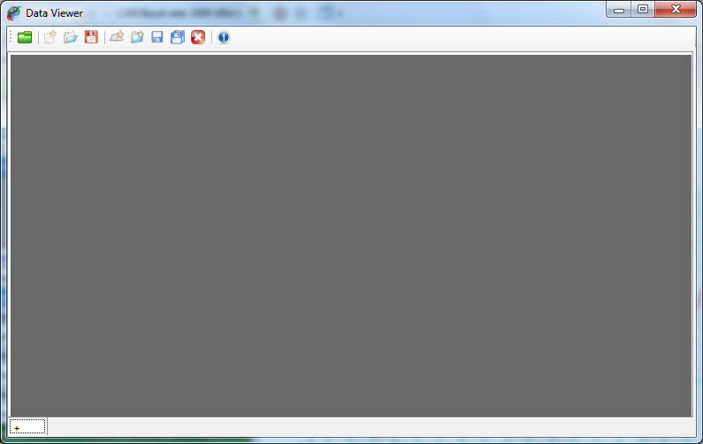

When creating a new analysis window, the window comes empty.

The data viewer window is composed of two elements.
Since the data viewer window can have multiple pages it can be considered as book. Each page of this book is a graphic window with a different graphic configuration.
Data to be displayed are loaded through the data browser. Check the ‘Data browser’ section for more details. However the set of data loaded is unique over the entire book. It means that all pages are actually showing the same set of data. It is consequently impossible to see the data file ‘A’ in the first page and the data file ‘B’ in the second page.
This behavior might sound as a weakness or a missing functionality, but actually this is not a weakness. Experienced users know that while working with multiple pages it is possible to get lost and not remember what exact data set is loaded on each page. So to make things easy all pages are showing the same data set.
Created with the Personal Edition of HelpNDoc: Free EBook and documentation generator